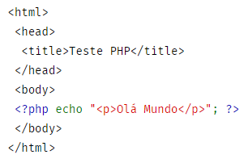

PHP (um acrônimo recursivo para "PHP: Hypertext Preprocessor", originalmente Personal Home Page) é uma linguagem interpretada livre, usada originalmente apenas para o desenvolvimento de aplicações presentes e atuantes no lado do servidor, capazes de gerar conteúdo dinâmico na World Wide Web.
VoltarO PHP 5.5+ requer ao menos Windows 2008/Vista, ou 2008r2, 2012, 2012r2, 2016 ou 7, 8, 8.1, 10. 32-Bit ou 64-bit (aka X86 or X64; PHP não roda no Windows RT/WOA/ARM).
O PHP requer o Visual C runtime (CRT). Muitas aplicações também tem esse requisito, de forma que ele já deve estar instalado.
Crie um novo arquivo chamado ola.php e coloque-o no diretório root do seu servidor web (DOCUMENT_ROOT) com o seguinte conteúdo:

Use o seu navegador para acessar o arquivo com a URL de seu servidor web, terminando com a referência ao arquivo /ola.php. Quando o desenvolvimento for local esta URL será algo como http://localhost/ola.php ou http://127.0.0.1/ola.php mas isso depende da configuração do seu servidor web. Veja o resultado simples na sua telinha.
Voltar